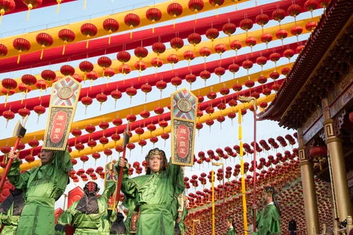

「歌詩穆穆，舞佾間間，簫韶純如，聲達於天。」
祭天的文化意義在於傳統祭祀儀禮，是讓人們返回先天之本心與初心，其對上天的敬畏之心和感恩之情通過祭祀儀禮得以感通與傳達， 報本崇德之意尤甚，客觀上有助於民德歸厚的社會氣息。祭天大典以音樂、舞蹈等藝術形式集中體現了聞樂知德、觀舞澄心、識禮明仁、禮正樂垂、中和位育的中華禮樂精神， 形象生動地闡釋了「禮」的內涵，表達了儒家思想中「仁者愛人」、「以禮立人」的思想內核，具有濃郁的文化親和力、精神凝聚力和藝術感染力，對於弘揚中華優秀傳統文化、 營造和睦的社會文化氛圍、構建和諧社會、凝聚民族精神等方面具有深遠的社會文化意義。

寶光聖堂祭天大典儀禮盛況